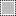

O diálogo de Canais é a principal interface para editar, modificar e gerenciar seus canais. Há dois tipos distintos de canais no GIMP, e por isso esse diálogo é dividido em duas partes: a primeira parte para os canais de cor, e a segunda parecidos para os canais que podem ser usados como máscaras de seleção ou de spot-colors.
Canais de cor se aplicam à imagem e não a uma camada específica. Basicamente, três cores primárias são necessárias para renderizar toda a ampla gama de cores naturais. Como outros softwares digitais, o GIMP usa Vermelho, Verde e Azul como cores primárias. Os primeiros e principais canais exibem os valores Vermelho, Verde e Azul de cada pixel em sua imagem.
Ao lado do nome do canal há uma miniatura exibindo uma representação em escala de cinza de cada canal, onde branco é 100% e preto é 0% da cor primária. Alternativamente, se sua imagem não é colorida, mas uma imagem em Escala de Cinza, há apenas um canal primário chamado Escala de Cinza. Para uma imagem Indexada com um número fixo de cores conhecidas, também há apenas um canal primário chamado Indexado.
Then there is an optional channel called Alpha. This channel displays transparency values of each pixel in your image (See Alpha Channel in Glossary). In front of this channel is a thumbnail displaying a grayscale representation of the transparency where white is opaque and visible, and black is transparent and invisible. If you create your image without transparency then the Alpha channel is not present, but you can add it from the Layers Dialog context menu. Also, if you have more than one layer in your image, GIMP automatically creates an Alpha channel.
![[Nota]](images/note.png)
|
Nota |
|---|---|
|
O GIMP não suporta os modelos de cor CMYK ou YUV para edição de imagem. |
Figura 15.7. Representação de uma imagem com canais

Canal vermelho

Canal verde

Canal azul

Canal alfa

Todos os canais
A imagem da direita está decomposta em três canais de cor (vermelho, verde e azul) e o canal alfa para transparência. Na imagem, a transparência é representada por um quadriculado cinza. No canal de cor, branco sempre aparece como branco, por que todas as cores estão presentes em intensidade máxima. Da mesma forma, preto é sempre preto. O chapéu vermelho é visível no canal vermelho, mas imperceptível nos outros canais, O mesmo acontece para a cor verde sólida e o azul, que só são visíveis em seus respectivos canais.
O diálogo de “Buffers” é um diálogo de encaixe;veja a seção Seção 2.3, “Caixas de diálogo e de encaixe” para mais informações sobre como gerenciá-lo.
Você pode acessa-lo:
-
From the main menu through → → .
-
From the Tab menu in any dockable dialog by clicking on
 and selecting
→ .
and selecting
→ .
In the menu, there is a list of detached windows which exists only if at least one dialog remains open. In this case, you can raise the “Channels” dialog from the main menu: → .
- Visão geral
-
The Channels Dialog consists of a list of color channels and the optional Alpha channel. Below that is a list of selection mask channels. A right-click in a channel list entry opens the channel context menu.
The color channels are always organized in the same order. They cannot be removed. You can only change their visibility and select or unselect them. By default, all of these channels are visible and selected.
To select a channel, click on a color channel in the list. This toggles the selection of the channel, meaning a selected channel will become unselected and vice versa. The selected color channels appear highlighted in the dialog.
![[Cuidado]](images/caution.png)
Cuidado Unselecting one of the color channels red, blue, or green has severe consequences. For instance if you disable the blue channel, all pixels from now on added to the image will not have a blue component, and so a white pixel will have the yellow complementary color.
Making one of the color channels invisible does not influence how tools work and only changes what is currently displayed on your screen. For example, a brush will continue to paint as usual, and the eraser will change the alpha value of pixels also when the alpha channel is set to be not visible.
The selected color channels define which parts of a tool's action are applied to the layer. For example, the eraser will not change your image if the alpha channel is not selected.
Nota The duplicate and selection commands documented below can also be used on the color channels. However, this only works when accessing the command from the right-click context menu, and only for one channel at a time.
- Selecting multiple channels
-
GIMP allows you to select multiple selection mask channels and perform actions on them. You can e.g. move them to a different location in the channels stack, and convert them to selections. Selecting multiple channels is done by using the mouse and Shift key, for adding a range of channels, or Ctrl key, for adding or removing the clicked channel.
- Channel list header
-
Directly above the list of selection masks is the header bar. On the left you see the icons that identify the visibility and lock columns. In the middle a text label will tell you how many channels are currently selected if it is more than one.
- Atributos de canal
-
Cada canal é exibido na lista com seus próprios atributos, que são bastante similares aos atributos de camada:
-
 Visibilidade do canal
Visibilidade do canal
-
By default, all color channels are visible, and color mask channels are invisible. Clicking on the eye-symbol, or the empty space if the channel is not visible, will toggle the visibility of the channel. Shift-clicking on the icon causes all other channels to be hidden.
- Atributos de canal
-
Each selection mask channel has lock attributes. If one of its attributes is set, the respective lock icon will show up in front of the thumbnail.
When multiple attributes are set, a double lock icon will show here. Clicking in this column allows you to change these attributes.
- Travar pixels
-
This icon shows when “lock pixels” is enabled for the current channel. When this is enabled, the channel is locked for any action that changes pixels, meaning there will be no changes done to this channel.
-
 Travar posição e tamanho
Travar posição e tamanho
-
This icon shows when “lock position and size” is enabled for the current channel. When this is enabled, the channel is locked for any action that changes its position or size.
-
 Lock visibility
Lock visibility
-
This toggle button controls the “Lock” setting for the visibility of the channel. If this is enabled, the channel visibility cannot be changed until you disable the lock.
- Miniatura
-
Um pequeno ícone de pré-visualização representa o efeito do canal. Em uma máscara de seleção, essa pré-visualização pode ser aumentada segurando-se o botão do mouse pressionado sobre a mesma.
- Nome do canal
-
O nome do canal, que deve ser único em cada imagem. Clicar duas vezes no nome de um canal de máscara de seleção permite que você o edite. Os nomes dos canais primários (Vermelho, Verde, Azul e Alfa) não podem ser mudados.
-
- Gerenciando canais
-
The button bar at the bottom offers the following functionality:
-
 Novo canal
Novo canal
-
This creates a new channel. A dialog will open where you can set the Channel name, the Color tag, the channel attributes and lock attributes, and finally the Opacity and color used for the mask in the image window. A click on the color button displays the GIMP color selector where you can change the mask color.
If you press the Shift key while clicking the button, the New Channel dialog will not be opened. Instead the new channel will be created with the same settings as used previously. This new channel is a selection mask applied over the image. See for more details Selection Mask.
- Raise Channels
-
This moves the selected channels up in the list. Press the Shift key to move the selected channels to the top of the list.
- Lower Channels
-
This moves selected channels down in the list. Press the Shift key to move the selected channels to the bottom of the list.
- Duplicate Channels
-
This creates a copy of the selected channels. The name of the new channels is suffixed with a number.
![[Dica]](images/tip.png)
Dica You can also duplicate color channels or the Alpha channel. It's an easy way to keep a copy of them and to use them later as a selection in an image. Note that you can only duplicate one color channel at a time, and only using the right-click context menu.
-

Replace the Selection with Selected Channels -
This transforms the selected channels to become a selection. By default the selection derived from channels replaces the active selection. You can change this by using control keys.
-
Shift: a seleção derivada do canal é adicionada à seleção previamente existente. A seleção final é a combinação de ambas.
-
Ctrl: a seleção final é a subtração da seleção derivada de um canal de uma seleção previamente ativa.
-
Shift+Ctrl: a seleção final é a intersecção da seleção derivada de um canal com a seleção previamente ativa. Somente as partes em comum são mantidas.
-
- Delete Channels
-
This deletes the selected channels.
-
- Visão geral
-
You can get the Channels context menu by right clicking on a channel. Several of the operations on channels are also available through buttons at the bottom of the channels list. Those operations are documented there.
These commands, except Edit Channel Attributes…, also work when multiple channels are selected.
- Editar atributos de canal
-
Só está disponível para canais do tipo máscara. Aqui você pode alterar o nome do Canal. Os outros dois parâmetros afetam a visibilidade do canal na janela de imagem; eles controlam a Opacidade e a cor usadas para a máscara na janela de imagens. Um clique no botão de cor exibe o seletor de cores do GIMP, e você pode escolher outra cor para máscara. Com essas opções você pode usar canais também para simular cores especiais (spot colors) em imagens destinadas a impressão especial.
- Color Tags
-
Only available for selection masks. This allows you to assign a color tag to one or more selected channels. If you have a lot of channels this can make it easier to identify them by giving related channels the same color tag. To remove the color tag choose None.
- New Channel…, Raise Channels, Lower Channels, Duplicate Channels, Delete Channels
-
Veja Gerenciando canais
- Channels to Selection
-
The selection derived from the selected channels replaces the previously active selection.
- Add Channels to Selection
-
The selection derived from the selected channels is added to the active selection. The final selection is merged from both.
- Subtract Channels from Selection
-
The final selection is the subtraction of the selection derived from the selected channels from the active selection.
- Intersect Channels with Selection
-
The final selection is the intersection of the selection derived from the selected channels with the active one. Only the selected parts common to both are kept.


Channels can be used to save and restore your selections. In the Channels dialog you can see a thumbnail representing the selection. Selection Masks are a graphical way to build selections into a gray level channel where white pixels are selected and black pixels are not selected. Therefore gray pixels are partially selected. You can think of them as feathering the selection, a smooth transition between selected and not selected. This is important to avoid the ugly pixelization effect when you fill the selection or when you erase its content after isolating a subject from background.
- Criando máscaras de seleção
-
Há várias formas de inicializar uma máscara de seleção.
-
From the main menu → if there is an active selection.
-
In the image window the bottom-left
 button creates a
Quick Mask; the content
will be initialized with the active selection.
button creates a
Quick Mask; the content
will be initialized with the active selection.
-
From the Channels dialog, when you click on the New channel button or from the context menu. When created, this Selection mask appears in the Channels dialog, named “Selection maskcopy” with a queuing number. You can change this by using the context menu that you get by right-clicking on the channel.
-
Uma vez que o canal esteja inicializado, selecionado (em destaque na lista do diálogo de Canais), visível (ícone de olho no diálogo), e exibido como você deseja (atributos de cor e opacidade), você pode trabalhar no mesmo com todas as ferramentas de pintura. As cores usadas são importantes. Se você pintar com qualquer cor que não seja branco, preto , ou cinza, o valor da cor (sua luminosidade) será usado para determinar o tom de cinza equivalente àquela cor. Quando sua máscara estiver pintada, você pode transformá-la numa seleção clicando no botão (Canal para seleção) ou a partir do menu de contexto
Você pode trabalhar nos canais (máscaras de seleção) não só com a ferramenta de pincel, mas também com as outras ferramentas e filtros. Por exemplo, você pode usar as próprias ferramentas de seleção no canal para preencher áreas uniformemente com degradês ou texturas. Ao adicionar várias máscaras diferentes a sua lista, você pode compor facilmente seleções bastante complexas. Pode se dizer que uma máscara de seleção é para uma seleção o que uma camada é para uma imagem.
|
|
Cuidado |
|---|---|
|
Enquanto um canal (máscara de seleção) estiver ativo, você está trabalhando nesse canal, e não na imagem. Para voltar a trabalhar na imagem, você deve desativar todos os canais (você pode simplesmente selecionar uma camada no diálogo de Camadas para isso). Não se esqueça de desligar sua visualização, clicando no ícone de olho para que ele suma. Certifique-se também de que os 4 canais RGB e A estejam ativos nesse diálogo e exibidos na imagem (os canais no topo da lista). |

A Quick Mask is a Selection Mask intended to be used temporarily to paint a selection. Temporarily means that, unlike a normal selection mask, it will be deleted from the channel list after its transformation to selection. The selection tools sometimes show their limits when they have to be used for doing complex drawing selection, as progressive. In this case, using the Quick Mask is a good idea which can give very good results.
The Quick Mask can be activated in different ways:
-
From the main menu: → .
-
By clicking the bottom-left
button highlighted in the screenshot.
-
Usando-se o atalho de teclado Shift+Q.
To initialize a Quick Mask,
click the bottom-left
 button in the image window. If a selection was
active in your image, then its content appears unchanged while the
border is covered with a translucent red color. If no selection was
active then all the image is covered with a translucent red color.
Another click on the bottom-left button will deactivate the quick mask.
button in the image window. If a selection was
active in your image, then its content appears unchanged while the
border is covered with a translucent red color. If no selection was
active then all the image is covered with a translucent red color.
Another click on the bottom-left button will deactivate the quick mask.
From the Channels dialog you can double click on the name or the
thumbnail to edit the QMask attributes. Then you
can change the Opacity and its filling color. At
every moment you can hide the mask by clicking on the eye icon
 in front of the QMask.
in front of the QMask.
A máscara é codificada em tons de cinza, então você deve usar branco ou cinza para diminuir a área limitada pela máscara (área selecionada), ou preto para aumenta-la. Áreas pintadas em tons de cinza, claros ou escuros, serão áreas de transição da seleção, como acontece ao enevoar a seleção. Quando sua máscara estiver pronta, clique novamente no botão a esquerda da barra de rolagem horizontal e a Máscara rápida será removida da lista de canais e convertida em uma seleção.
O propósito da máscara rápida é poder pintar em uma seleção e suas transições sem se preocupar com os passos intermediários de gerenciar canais com máscaras de seleção. É uma boa forma de isolar um elemento numa imagem por que uma vez que a seleção estiver feita, você só tem que remover seu conteúdo (ou inverter a seleção antes, se o objeto desejado estiver na seleção).

Screenshot of the image window with activated Quick Mask. As long as the Quick Mask is activated, all operations are done on it. A gradient from black (left) to white (right) has been applied to the mask.

The Quick Mask is now disabled. The selection occupies the right half part of the image (marching ants) because the limit of the selection is at the middle of the gradient.

Uma pincelada é adicionada enquanto a seleção está ativa. Veja só! O degradê, embora não seja visível, permanece existindo na imagem toda, tanto nas áreas que aparecem como selecionadas como no restante da imagem.
After the Quick Mask Button is pressed, the command generates a temporary 8-bit (0-255) channel, on which the progressive selection work is stored. If a selection is already present the mask is initialized with the content of the selection. Once Quick Mask has been activated, the image is covered by a red semi-transparent veil. This one represents the non-selected pixels. Any paint tool can be used to create the selection on the Quick Mask. They should use only grayscale color, conforming the channel properties, white enabling to define the future selected place. The selection will be displayed as soon as the Quick Mask will be toggled but its temporary channel will not be available anymore.
|
|
Dica |
|---|---|
|
To save in a channel the selection done with the Quick Mask select in the main menu → . |
-
Activate the Quick Mask using the left-bottom button in the image window. If a selection is present the mask is initialized with the content of the selection.
-
Choose a drawing tool and use it with grayscale colors on the Quick Mask.
-
Deactivate the Quick Mask using the left-bottom button in the image window.